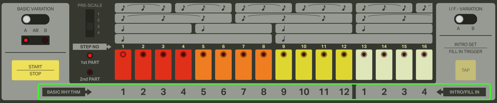
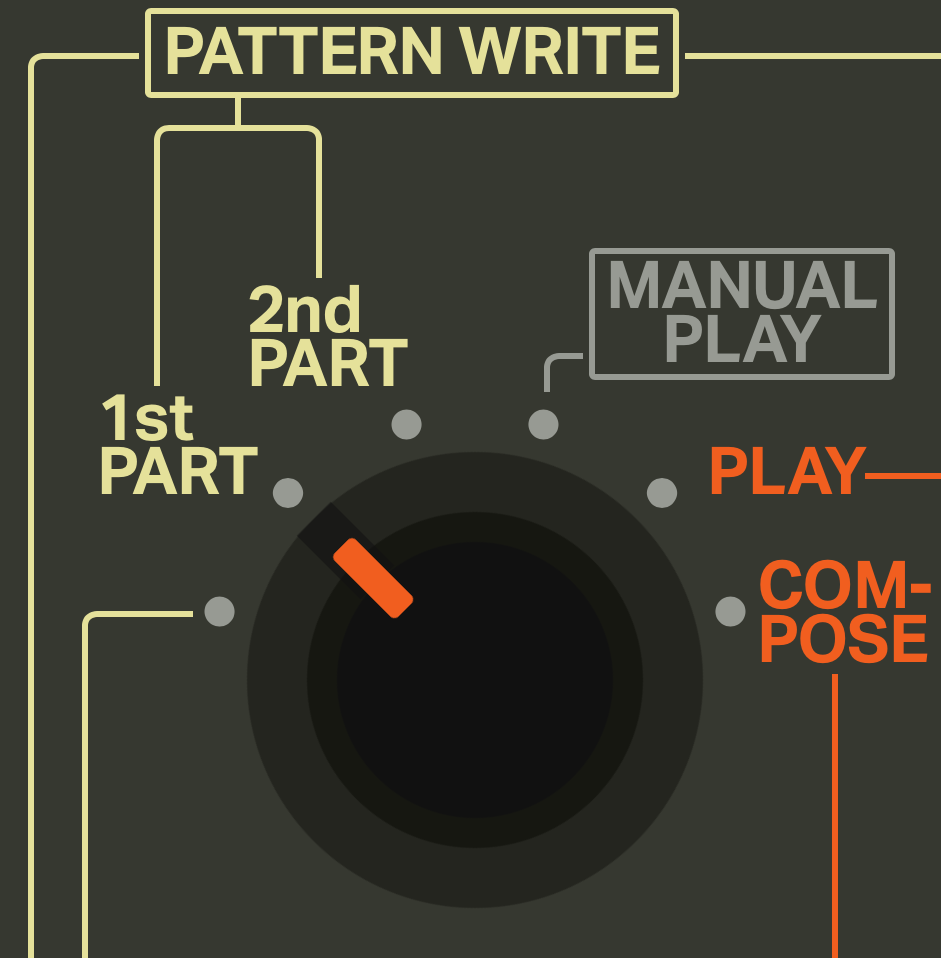
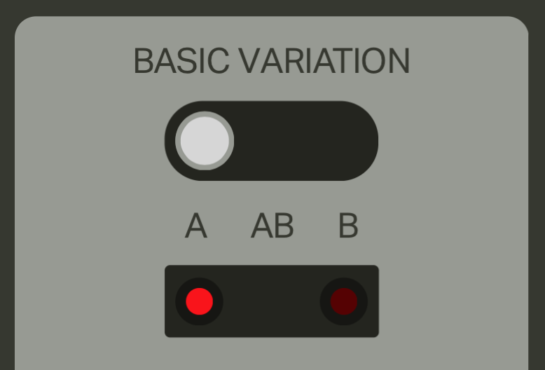
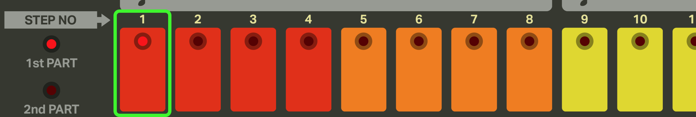
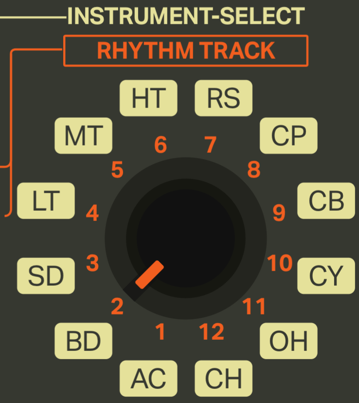
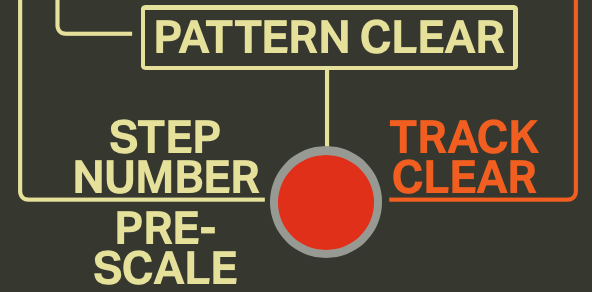
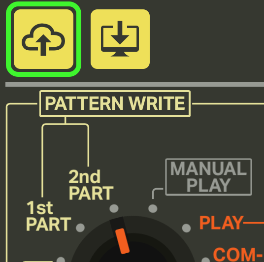

iO-808 Tutorial
Welcome to the iO-808 tutorial! The primary goal of this webapp is to faithful recreate the functionality of the original TR-808 hardware. Unfortunately if you are unfamiliar with the original hardware, the interface can be difficult to understand. This tutorial should get you quickly up to speed and making your own beats!
Table of Contents
Programming Patterns
In the 808 there are a total of 12 basic rhythm and 4 fill in patterns that you can store in memory. These patterns are identified by the labels below the step buttons shown here:

Each of these patterns has a first and second part along with an A and B variation which we will talk about next.
First Part
Lets start programming some patterns.
As a first step we need to turn the mode knob (found at the top-left of the app) to 1st PART position.

You will also want to ensure the basic variation switch is in the A position. We will be talking about programming variations in a following section.

If you look at the step buttons you'll notice that one of the lights will be blinking. While the drum machine is stopped the blinking light will identify which of the 16 patterns we are going to be editing. For now lets select the first pattern.

Now when you press the Start/Stop button the lights on the step buttons will be lighting up one by one in sequence. This light represents the current position of the beat. There's no sound coming out though...well that's because we haven't programmed any drum hits into the pattern yet! Lets add some bass drums to our pattern.
First lets make sure we're going to add bass drum hits to our pattern. We determine which drum we're programming using the INSTRUMENT-SELECT knob (next to the mode knob in the top-left). So if we want to add bass drum hits to our pattern the INSTRUMENT-SELECT knob should be in the BD position.

Now just click the step buttons where you want the hits to happen and you should hear the drum hits. The positions where you sequenced in your drum hits also will stay illuminated. If you want to remove a trigger from the sequence just click the step button again and the trigger will be removed.
Each drum sound also has timbral properties that can be adjusted in real time with the following controls:

Now try adding triggers for all the other available drum sounds until you have a fully-composed 16 step pattern!
Note: The Accent Instrument
You'll notice that if you add triggers to the Accent instrument it doesn't add any drum sound. What this instrument does is allow you to sequence changes to overall volume of all other instruments. The triggers in this sequence correspond to an increase in volume which can add some swing/feel to your patterns.
The LEVEL knob for the Accent instrument determines the difference in volume between inactive and active accent steps. The loudest volume will always stay the same but as you increase the Accent's LEVEL the inactive steps will increasingly get quieter.
Second Part
You know what's better than a 16 step pattern? A 32 step pattern!
As mentioned before each pattern has 2 parts that can be programmed. To edit the second part you need to switch to the 2nd PART mode via the mode knob.

Selecting which pattern you want to edit works the same exact way as the 1st PART. The first pattern should still be selected so you shouldn't need to do anything other than click play to start editing.
When you press play you should notice that the according to the lights on the step buttons, the patterns are empty. You'll also notice that even though they seem empty, the sound coming out is still just looping the 1st PART. This is by design as when you are in the 2nd PART mode, you are editing the second part through the step buttons, but you hear the second part in context of being after the 1st PART (1st PART -> 2nd Part -> Loop back to 1st PART).
The reason why the sequence is only looping the 1st PART is due to the fact that the 2nd PART's pattern length defaults to zero, which is a great transition to...
Setting Pattern Lengths
By default, the 1st PART of all 16 patterns has a pattern length of 16 and the 2nd PART has a pattern length of 0. To set the pattern length of a part you need to have the desired part selected via the mode knob as well as the desired pattern selected the same way you did when selecting which pattern to program beats into.
Now to choose the desired pattern length you drag the CLEAR button (below the mode knob) to the step button which has the step number that corresponds to the desired pattern length.
This operation can be done whether the sequencer is playing or not.
There is an important difference between setting the pattern length of 1st PART vs. 2nd PART though. When you set the pattern length of the 1st PART of a pattern, it will also set the 2nd PART pattern length to 0. Setting the 2nd PART pattern length does not affect the 1st PART.
So... in order for us to program our second part we need to set a pattern length greater than 0. Try setting it to 16 and then you should be able to edit the second part in the exact same way as you did the first.
Playing Patterns
After you program a collection of patterns the next step is to turn those patterns into a song. If case you haven't already filled up all your patterns and want to follow along you can download this example save. To load the save see the loading section of this tutorial.
With the full save loaded, you need to switch to the MANUAL PLAY mode using the mode knob.

Selecting the Starting Pattern
When you switch to the MANUAL PLAY mode you'll notice that there will be one step button light blinking and one solid. Each of these illuminated lights represents the selected BASIC RHYTHM and INTRO/FILL IN. To change the selected BASIC RHYTHM you click one of the first 12 step buttons and to select the INTRO/FILL IN you click one of the 4 last step buttons.
The blinking of the two illuminated step buttons represents what pattern is going to start when the START/STOP button is pressed. By default the BASIC RHYTHM pattern is scheduled to be the first patter but if you press the TAP button it will toggle between the BASIC RHYTHM and the INTRO/FILL IN.
Scheduling Patterns
While the sequencer is playing in MANUAL PLAY mode there are two states that the sequence can be in:
BASIC RHYTHMis playing and will move to the next selected pattern (if no different pattern was selected it will loop).INTRO/FILL INis playing but when it finishes the pattern the state will switch back to state 1.
To select the next BASIC RHYTHM to play just click its corresponding step button and it will be played once the current pattern has finished playing. Clicking an INTRO/FILL IN step button does not schedule it to be played next but selects which pattern will be played when a fill in is triggered.
To trigger an INTRO/FILL IN you need to press the TAP button which schedules the fill pattern to be played after the currently playing pattern has finished. Here's a video example of switching BASIC RHYTHMs and triggering INTRO/FILL INs:
Clearing Patterns
To clear a pattern you first need to change the mode knob to PATTERN CLEAR:

Then select the pattern that you want to clear using the step buttons in the same way you've done for selecting which patterns to edit in the 1st PART and 2nd PART modes. To finally perform a pattern clear just press the clear button (same button you used to drag in order to set pattern length) and both the 1st PART and 2nd PART of that pattern will be cleared. Note that the pattern lengths for both parts will not be affected.

Another selection to keep in mind is the BASIC VARIATION switch which will determine which variations of the selected pattern will be cleared.
Sharing
iO-808 provides the ability to save and load your collection of patterns.
Saving
If you would like to share your collection of patterns click the save button (the second button on the top left). Your save file should then download to your computer.

Note that you do not need to save your patterns in order to continue programming later. This is done automatically so when you open the app after closing it all your progress should still be there.
Loading
To load a save into your own app, click the load button (the top left-most button) and select an iO-808 .json save file.
